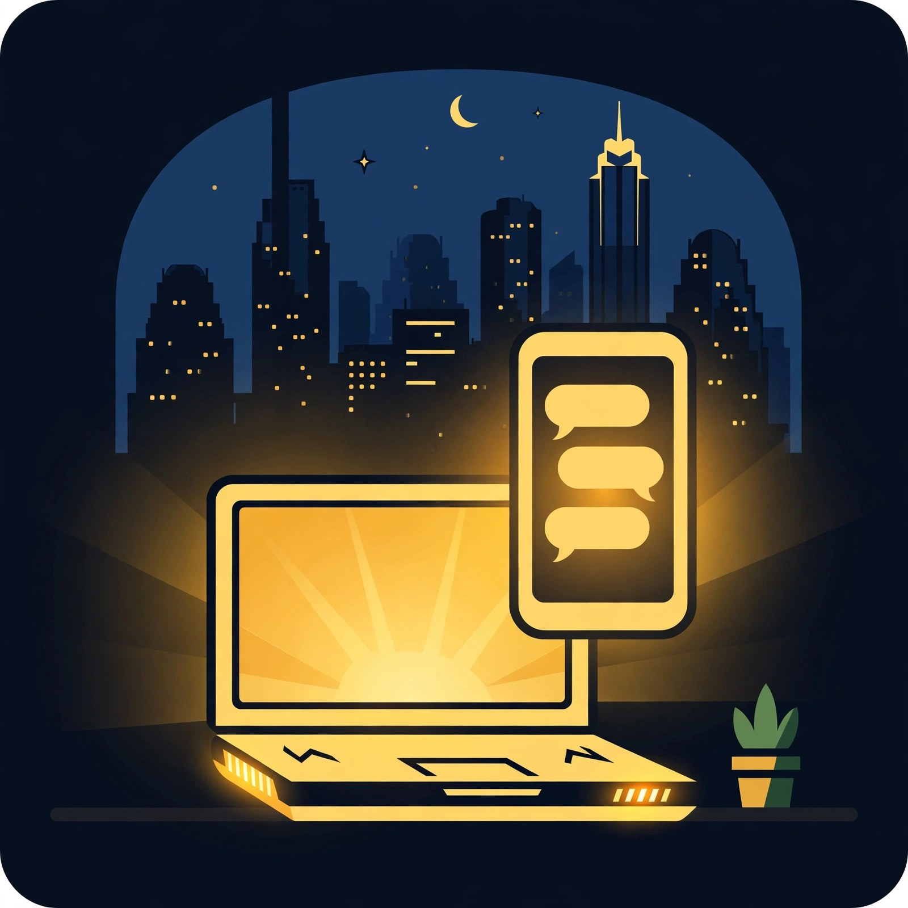

EPS Build Log
Build in public with Every Possible Service. Sakura and Alex log the making of a home AI server, local models, AI video, and the products and channels built on top of them — what worked, what broke, and what ships next.
Subscribe via RSSFeed URL: https://nathanak.github.io/eps-build-log-feed/feed.xml